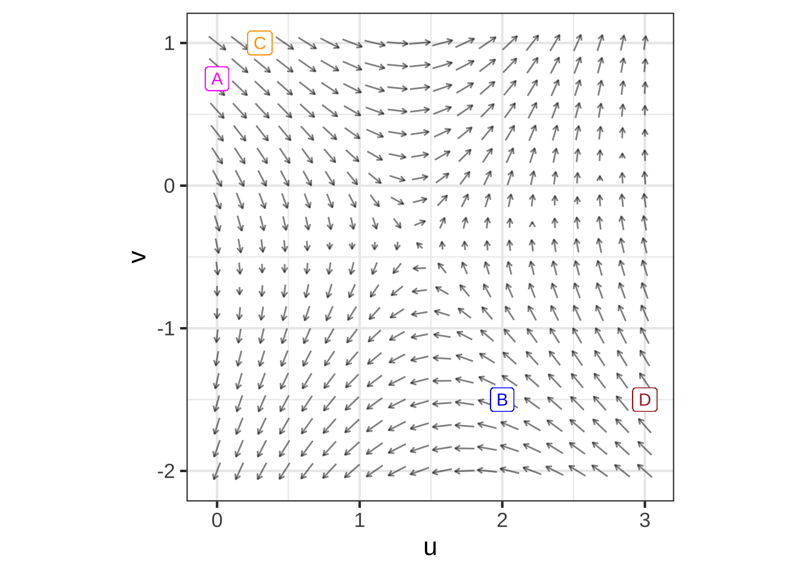

40.1 Differential equations
- Explain the format in which we present dynamics as opposed to trajectories
- Find qualitative solutions from an initial condition
- Articulate the difference between state, dynamics, and trajectory
40.2 Vocabulary
- Differential equation
- Initial condition (or, initial value or boundary value)
- State & state variable & state space
- Solution
- Time series (state variable versus time)
- Trajectory (Movement in the state space)
- Fixed point
- Flow field
- Euler integration (iteration)
40.3 Examples
- Bank interest or sapling growth.
- Gompertz growth
- Logistic growth (e.g. population, or change in height of tree versus height).
- Pendulum
- Disease
- Rocket
40.4 The language for change
Calculus is the dominant means of describing change. Developed initially in the 1600s as a means of relating planetary motion to the force of gravity felt on Earth, it nonetheless remained the way of describing heat, sound, and electromagnetism in the 1800s. It the 1900s, calculus was turned to representing the basic mechanisms of quantum mechanics.
The beginning student may see calculus as consisting of manipulations and transformations (e.g. differentiation and integration). The first stages of learning calculus consists of applying such manipulations and transformations to textbook exercises. To use these observations productively in solving real-world problems, you need to have a way of describing the world and the mechanisms of the world in terms of calculus. For this, you need to start seeing calculus as a language for description.
We’ll use four concepts of language in describing calculus: nouns, verbs, clauses, and sentences.
A calculus noun is an object such as a function, scalar, vector, or matrix.
A calculus verb is an operation such as differentiation and accumulation. Other verbs come from arithmetic and algebra: square roots, addition, multiplication, and so on.
A calculus clause is the application of a verb to one or more nouns to produce a new noun. For instance, if the original noun is the function \(x(t)\) representing the position of an object in time, then the application of the verb \(\partial_t\) to the function is a new function \(\partial_t\, x(t)\), which we interpret as velocity.
A calculus sentence is an equation: a statement of the equivalence of two nouns.
Natural languages such as English or Chinese are much more complicated. Calculus involves sentences such as “The color of John’s bike is blue,” where “is” stands for equality: \[\underbrace{\text{The color of John's bike}}_{\text{noun}}\ \underbrace{\text{is}}_{=}\ \underbrace{\text{blue.}}_{\text{noun}}\]
In both calculus and natural languages, such sentences allow us to draw conclusions that may be useful or informative. For instance, combined with the sentence, “The bike I see is red,” a conclusion might be, “The bike I see is not John’s.”
Early calculus sentences were often about positions, velocities, forces, and accelerations, for instance \[F_\text{air} = \alpha v^2\] which is a simple model of the force due to air resistance.
In this Block, we’ll use the language of calculus to represent dynamics, situations of motion, growth, decay, and oscillation. This Chapter introduces some of the nouns involved.
40.5 State
Here are a few of the situations we will construct calculus-language descriptions of:
- physics
- swing of a pendulum
- bobbing of a mass hanging from a string.
- a rocket shooting up from the launch pad
- commerce
- investment growth
- growth in equity in a house as a mortgage is paid up. (“Equity” is the amount of the value of the house that belongs to you.)
- biology
- growth of animal populations, including predator and prey.
- growth of a tumor
- growth of an organism or a crop.
A model describing such situation has a basic component called the dynamical state, as in “the state of affairs,” or “his mental state,” or “the state of their finances.”
One of the things you learn when you study a field such as physics or epidemiology or engineering is what constitutes a useful description of the dynamical state for different situations.
As an example, consider the rather simple physical system of a pendulum. A pendulum, as you know, consists of a mass hanging from a rod or rope pivoting to another object such as the ceiling. In physics, you learn the essential elements of the pendulum system: the length of the rod, the gravitational acceleration. These aspects of the system are fixed, they don’t change in time. Although such characteristics may be important in describing the system, they are not elements of the dynamical state.
The dynamical state consists of the aspects of the system that are changing in time, seen instantaneously. For instance, the angle that the pendulum makes from the vertical changes in time. Such changing aspects, seen at each instant of time, constitute the dynamical state. We say, for example, that angle-from-the-vertical is a state variable and that the state at any instant is the angle at that instant..
In a physics class, you learn that angle is not a complete description of state. You need also to know the velocity of the pendulum, described for instance as the velocity of the mass at the end of the pendulum.
To be complete, the dynamical state of a system has to include all those changing aspects of the system that allow you to calculate from the state at this instant what the state will be at the next instant. For example, from the angle of the pendulum at an instant it’s not possible so say what the angle will be at the next instant. You need to know which way the pendulum is swinging and how fast. And you also need to know the relevant fixed aspects of the system, such as the length of the pendulum.1
Figuring out what constitutes the dynamical state requires knowledge of the mechanics of the system, e.g. the action of gravity, the constraint imposed by the pivot of the pendulum. You get that knowledge by studying the relevant field: electrical engineering, economics, epidemiology, etc. You also learn what aspects of the system change slowly enough that they can be considered fixed.
But there are a few things we can say mathematically about states that provide a valuable clue about the state of any continuous-time system.
- If the change is monotonic, the state can consist of just a single element.
- If the change is non-monotonic, that is, oscillates back and forth, the state must have two or more elements.
- If the change is irregular, the state must have at least three elements.
In this book, we will work almost exclusively with systems that have a one- or two-dimensional state. The methods you learn will be broadly applicable to systems with higher-dimensional state.
One of the ways in which calculus is the language of change can be seen in the words used in this section. For instance, instantaneous, continuous-time, and monotonic are all words introduced in Block 1 of this book.
What does it take to describe the dynamical state of an epidemic?
News reports of the COVID pandemic usually focus on the number of new cases each day and the fraction of the population that has been vaccinated. But this is not adequate, even for a simple description of the dynamics.
From a history of new-case counts over time (e.g. Figure 1) you can see that the number of new cases waxes and wanes. Knowing that the number of cases today is, say, 100 thousand doesn’t tell you what the number of cases will be in two weeks: 100 thousand is encountered both on the way up and on the way down.
Figure 1: COVID-19 new-case counts in the US over the first two years of the pandemic. Source: [New York Times]
40.6 Dynamics
The dynamics of a system is a description of how the individual components of the state change as a function of the entire set of components of the state.
A simple example is the dynamics of retirement-account interest. In a retirement account, you put aside money—this is called “contributing”—each month. The value \(V(t)\) of the account accumulates over time, both due to new monthly deposits and to the interest \(r\) earned on the current account value. If you are setting aside \(M\) dollars per month, the dynamics are: \[\partial_t V(t) = (1+r) V(t) + M\ .\] For the sake of simplicity, we can imagine that the interest rate and monthly contribution are constants: they are not part of the dynamical state. This leaves \(V\) at any given time as the state variable. The dynamics tell the rate of change in the state variable, \(\partial_t V(t)\) as a function of the current value \(V(t)\) of the state variable.
A more complete model might include the monthly contribution \(M(t)\) changing with time. For instance if you income changes over the years, your contribution will likely change along with it. Similarly, interest rates are notoriously variable over time. Still, these are not included in the dynamical state There’s a simple reason: we don’t have usually have any model describing how \(r(t)\) and \(M(t)\) change as a function of the state. That is, we can’t say how \(r(t)\) changes as a function of \(V(t)\), \(r(t)\), and \(M(t)\). Quantities such as interest rate and contribution amount are said to be exogenous meaning “outside the system.” (The word comes from the root “exo,” meaning “outside,” and “indigenous,” meaning “native to.”) Your retirement account doesn’t determine the interest rate; interest rate is something (from your perspective) that comes from outside, largely uncontrollable factors.
Another example, found in physics textbooks, is the dynamics of the pendulum. In studying physics, you learn how to identify and keep track of the forces involved. Without getting involved much with the physics, we note that the oscillatory nature of pendulum movement means that there must be at least two state variable. We’ll take these to be the angle \(\theta(t)\) of the rod with respect to the vertical, and the angular velocity \(v_\theta(t)\) telling how the velocity changes with time. The dynamics consist of two functions, the first being \(\partial_t \theta(t)\) and the second \(\partial_t v_\theta(t)\). They are: \[\partial_t \theta(t) = v_\theta(t)\\ \partial_t v_\theta(t) = - \sin(\theta) \]
Why did you bother to define a state variable \(v_\theta(t)\) when it is, by definition, exactly the same as \(\partial_t \theta(t)\)?
Even though the dynamical equation \(\partial_t \theta(t) = v_\theta(t)\) is a calculus tautology, we need always to be explicit about what are the two quantities in the dynamical state. The first of the two dynamical equations comes for free from basic calculus concepts. The second equation, however, is about the physics, the relationship between forces and acceleration.
There is a style of writing dynamics equations that discards such tautologies. For example, the pendulum dynamics are often written \[\partial_{tt} \theta(t) = - \sin(\theta)\]. We’ll return to this style in Chapter 40.11. We are avoiding this style because it obscures the fact that there are two state variables: \(\theta(t)\) and \(v_\theta(t)\),
Example 1 Consider the population of two interacting species, say rabbits and foxes. As you know, the relationship between rabbits and foxes is rather unhappy from the rabbits’ point of view even if it is fulfilling for the foxes.
Many people assume that such populations are more or less fixed: that the rabbits are in a steady balance with the foxes. In fact, as any gardener can tell you, some years there are lots of rabbits and others not: an oscillation. Just from this fact, we know that the dynamical state must have at least two components.
In a simple, but informative, model, the two components of the dynamical state are \(R(t)\) and \(F(t)\), the population of rabbits and foxes respectively. In the absence of foxes, the dynamics of rabbits are exponential growth; each successive generation is larger than the previous one. This can be described by a dynamical equation \(\partial_t R(t) = \alpha R(t)\), where \(\alpha\) is a fixed quantity that describes rabbit fecundity.
Similarly, in the absence of food (rabbits are fox food), the foxes will starve or emigrate, so the dynamical equation for foxes is very similar \(\partial_t F(t) = - \gamma F(t)\), where \(\gamma\) is a fixed quantity that indicates the rate at which foxes die or emigrate.
Of course, in real ecosystems there are many other quantities that change and that are relevant. For instance, foxes eat not only rabbits, but birds and frogs and earthworms and berries. And the diet of rabbits eat weeds and grass (which is generally in plentiful supply), but also the gardener’s flowers and carrots (and other vegetables). Growth in the rabbit population leads to decrease in available flowers and vegetables, which in turn leads to slower growth (or even population decline) for rabbits.
In the spirit of illustrating dynamics, we’ll leave out these important complexities and imagine that the state consists of just two numbers: how many rabbits there are and how many foxes. The dynamics therefore involve two equations, one for \(\partial_t R(t)\) and one for \(\partial_t F(t)\), usually written: \[\partial_t R(t) = \alpha\, R(t) - \beta\, F(t) R(t)\\ \partial_t F(t) = \delta\, R(t) F(t) - \gamma\, F(t)\] The quantities \(\alpha\), \(\beta\), \(\gamma\), and \(\delta\) quantify the biology of the system: the reproduction rate of rabbits, the need of foxes for food (rabbits) in order to reproduce, the hunting success of foxes, and the death or emigration of foxes in response to a shortage of food.
Coming up with this description of dynamics requires knowing something about rabbits and foxes. The particular forms used, for instance the interaction term \(R(t) F(t)\), coming from modeling experience. When we write such dynamics here, the point is to illustrate some of the forms commonly used to represent real-world phenomena. For instance, the interaction term is well named because it is about the literal, biological interaction of foxes and rabbits, for better (\(+ \delta R(t) F(t)\)) or for worse (\(-\gamma R(t) F(t)\)) depending on which species we are looking at.
40.7 State space and flow field
A helpful representation of dynamics for the purpose of developing intuition is to represent the instantaneous state as a point in a graphical frame and the dynamics as a field of vectors showing how, for each possible state, the state changes. For instance, in the Rabbit-Fox dynamics, the state is the pair \((R, F)\) and the state space is the coordinate plane spanned by \(R\) and \(F\).
The present state of the system might be any point in the state space. But if we know the present state, the vectors tell us how the state is changing with time: move the state in the direction of the vector at the present state.
Let’s illustrate with the Rabbit-Fox system, whose dynamical equations are given above. To make a plot, we need numerical values for all the parameters in those equations.

Figure 2: The dynamics of the rabbit/fox system shown as a vector field over the state space. The parameters have been set, for the purpose of illustration, to \(\alpha = 0.4\), \(\beta = 0.0005\), \(\gamma = 0.2\), and \(\delta = 0.1\).
Time series
Trajectory plotted in state space.
40.8 Iteration
Gradient ascent. Where you go depends on where you are: follow the flow. Big steps and small steps.
Flow field and board games. Specify the velocity at each point in the space.
Used to: \(\partial_t x = gaussian(t)\). Solve this by anti-differentiation.
Now we’ll consider systems where the change in the state depends on the state itself. That is: \[\partial_t x(t) = -2 x(t)\] \[\partial_t x(t) = \frac{x(t + dt) - x(t)}{dt} = -2x(t)\\ \ \\ x(t+dt) - x(t) = -2x(t) dt\\ \ \\ \underbrace{x(t+dt)}_{\text{future value}} = \underbrace{x(t)}_{\text{current value}} - \underbrace{2 x(t) dt}_{\text{increment}}\]
Examples:
- Increment is \(e^{-kt}\): Gompertz growth: growth slows as you get older.
- Increment is gaussian(t): there’s a growth spurt
- Increment is proportional to \(a x\): population growth, bank interest. Dimension of \(a\): people per year, percent per year.
- Increment is proportional to \(r x - A\): Paying back a mortgage at a rate of \(A\) per year at an interest rate of \(r\) per year.
- We’ll move this to the linearization chapter. Let \(y = x - A/r\). Then \(dy = dx\). So \(\partial_y = r y\) and \(y = B e^{r t}\). Initial state is \(Principal - A/r\) which is going to be negative so \(y\) is exponential growth from a negative initial condition.
When the right-hand side has just \(t\), simply integrate. But what to do when the right-hand side includes \(x\)?
Tempting to try to integrate this: \[\int \partial_t x(t) dt = x(t) = \int (-2 x(t)) dt\]. We can’t solve the RHS until we know \(x(t)\).
Plot x versus t. All we know is the velocity field.
This is a relationship between two functions. The solving task is to find the function that satisfies this.
Does \(x(t) \equiv sin(2 t)\) satisfy the equation? \[\partial_t \sin(2t) = 2 \cos(2t) \overset{?}{=} 2 \sin(2t)\]
Method of Ansatze: We make an (informed) guess of the function, see if it’s feasible, and adjust parameters to make it true.
Example: \(\partial_t x = a x\). - Try \(x = A e^{\omega t}\). We find that \(\omega\) must equal \(a\). - Try \(x = A e^{\omega t} + B\): Doesn’t work. Or, rather, \(B\) must be zero.
40.9 Exponential
\(\frac{d}{dt} x = a x\)
f <- function(t, x, dt = 0.1, a=0.3) {
c(t + dt, x + a*x*dt)
}
soln <- Iterate(f, x0=c(t=0, x=1), n=100,
fargs=list(a=-.8, dt=.05))
gf_line(x ~ t, data = soln)
40.10 Using iteration
f <- function(t, x, dt = 0.1, a=0.3) {
c(t + dt, x + a*(x*(1-x))*dt)
}
soln <- Iterate(f, x0=c(t=0, x=.001), n=1000,
fargs=list(a=0.3, dt=.05))
gf_line(x ~ t, data = soln)
A trajectory is a sequence of successive states. For example, here is a trajectory of six successive states: \[\{ {\mathbf S_0}, {\mathbf S_1}, {\mathbf S_2}, {\mathbf S_3}, {\mathbf S_4}, {\mathbf S_5}\}\]
It’s conventional to call \({\mathbf S}_0\) the “initial state” or, more often, the initial condition.
Usually, we calculate a trajectory one step at a time: \[\left\{ {\mathbf S_0},\ \ \ \ \ \ \ \ \ \ \ \ \ \ \ \ \ \\ {\mathbf S_1}=g({\mathbf S_0}),\\ {\mathbf S_2} = g({\mathbf S_1}),\\ {\mathbf S_3} = g({\mathbf S_2}),\\ {\mathbf S_4} = g({\mathbf S_3}),\\ \ \ \ \ \ {\mathbf S_5} = g({\mathbf S_4}))\ \ \ \right\}\] NOTE: We’ve written the above on several lines just to make it more readable. It could just as well have been written on one line.
One common mathematical task in using finite-difference equations is iteration. In iterating a finite-difference equation, you are running a machine to construct the “future state” from the “present state.” In iteration, you repeatedly do this. By plugging in the “future state” into the machine, you generate a state further in the future.
It can be helpful to think of “future” and “present” state in terms of a series of days. The system’s state today is the present state. The system’s state tomorrow is the next future state. The system’s state on the day after tomorrow is the future state after tomorrows’s state.
A finite-difference equation is a statement about how tomorrow’s state is a function of today’s state. We could write this in the form \[\text{state}_{\small\text{tomorrow}} = g( \text{state}_{\small\text{ today}})\] This notation is wordy and hard to read. So we simplify it.
- Today is day \(n\)
- Tomorrow is day \(n+1\)
- The state on day \(n\) is written \(\mathbf S_n\).
- The state on day \(n+1\) is written \(\mathbf S_{n+1}\)
- The dynamics are represented by a function, say, \(g({\mathbf S})\).
- To remind us of the role played by \(g()\), we write \[{\mathbf S}_{n+1} = g({\mathbf S}_n)\]
(Exercises: DtLAhm, mJRDLy)
The ingredients for calculating a trajectory are:
- A function \(g(S)\)
- An initial condition \({\mathbf S}_0\).
- A choice of how many steps to take.
To facilitate calculating a trajectory, use the Iterate() operator.
g <- makeFun(5 + x/2 ~ x)
Traj <- Iterate(g, x0 = 7, n = 6)
Traj
The Iterate() operator takes as a first argument the dynamics in the form of the name of a function or a tilde-expression of the sort accepted by makeFun(). The next argument is the initial condition. (This argument is named x0 regardless of the name used in the dynamics). The third argument is the number of steps to iterate.
Iterate() returns a data frame with two (or more) columns. The first, named n, is the step number. The second is given the same name as the variable used in the dynamical function. Because the output of Iterate() is in the form of a data frame, you can employ any function set up to accept a data frame. gf_point() is particularly useful for plotting the trajectory as a function of \(n\).
Iterate() is for finite-difference equations in discrete time, so \(n\) will always be an integer and the trajectory is appropriately plotted as a series of isolated points. Even so, it can be helpful to the human viewer to connect the points faintly with straight lines. This makes it a bit easier to see the sequence. For instance:
# Make the Traj then ...
gf_point(x ~ n, data = Traj) %>%
gf_line(alpha=0.2)(Exercises: DzIhgb)
You can use the Iterate() function to compute the trajectory of any finite-difference system from any initial condition. Each trajectory is a sequence of numbers \(\{x_n\}\) for \(n=0, 1, 2, \ldots\).
Sometimes it’s possible to find an algebraic formula for a trajectory. Such a formula is unfortunately called a “solution,” an over-used word in mathematics. In the days before computers were readily available, students of dynamics tended to study only those systems for which an algebraic solution could be found. A more modern style is to put the modeling setting first and foremost and not hesitate to use numerical methods like Iterate() instead of relying on algebra.
Because the word “solution” appears so often in textbooks it’s helpful to know what they look like and how they are different from dynamics.
- Arithmetic sequences
- Dynamics: \(x_{n+1} = x_n + b\)
- Solution: \(x_n = x_0 + n b\)
- Geometric sequences
- Dynamics: \(x_{n+1} = \alpha\, x_n\)
- Solution: \(x_n = x_0\, \alpha^n\)
- Combined sequences
- Dynamics: \(x_{n+1} = \alpha\, x_n + b\)
- Solution: \(x_n = \left(x_0 - b/\alpha\right) \alpha^n + b/\alpha\)
The dynamics of a discrete-time system write tomorrow’s state as a function of today’s state. In contrast, the solution gives a formula for \(x_n\) directly in terms of \(n\), the initial condition \(x_0\), and any parameters of the system (such as \(\alpha\) and \(b\) in the above examples).
As you can see, even for dynamics as simple as for the combined sequences, the solution is fairly complicated. Because solutions can be so complicated, they can be extremely hard to find and hard to use. The only ones we will use extensively will be composed of relatively simple terms like \((-1)^n\) and \(\alpha^n\). The analogs of these for continuous time systems are \(\sin(\omega t)\) and \(e^{-kt}\).
(Exercises: 9mSE8t)
40.11 Finding a solution
<iframe frameborder=“0” height=“480px” src=“https://c3d.libretexts.org/CalcPlot3D/index.html?type=vectorfield;vectorfield=vf;m=0.66x-1.33xy;n=xy-y;p=0;visible=true;view=undefined;scale=4;nx=9;ny=9;nz=1;mode=0;twod=true;constcol=true;color=rgb(0,0,255);norm=false;desystem=true&type=slider;slider=t;value=0;steps=100;pmin=0;pmax=5;repeat=true;bounce=false;waittime=1;careful=false;noanimate=false;name=-1&type=window;hsrmode=3;nomidpts=true;anaglyph=-1;center=0,0,40,1;focus=0,0,0,1;up=0,2,0,1;transparent=false;alpha=140;twoviews=false;unlinkviews=false;axisextension=0.7;xaxislabel=x;yaxislabel=y;zaxislabel=z;edgeson=false;faceson=true;showbox=true;showaxes=true;showticks=true;perspective=false;centerxpercent=0.5;centerypercent=0.5;rotationsteps=30;autospin=true;xygrid=false;yzgrid=false;xzgrid=false;gridsonbox=true;gridplanes=false;gridcolor=rgb(128,128,128);xmin=0;xmax=2;ymin=0;ymax=1;zmin=-8;zmax=8;xscale=4;yscale=4;zscale=4;zcmin=-16;zcmax=16;xscalefactor=1;yscalefactor=1;zscalefactor=1;tracemode=0;keep2d=false;zoom=1.779667”, width=“90%”>

Figure 3: The flow field for the rabbit/fox dynamics. Click at an initial state to generate the trajectory from that state.
- Idea of accumulation
- Numerical solution: Euler method and iteration
- Analytic solution:
- Ansatze and confirming a solution
- Some special cases, separable equations
- Laplace transforms
More generally, since the rod has mass and the pendulum bob is not a single point, you need to know the distribution of mass along the pendulum, from which you can calculate quantities such as the moment of inertia.↩︎